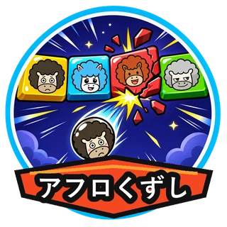
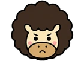
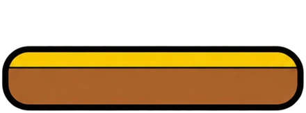

BREAKOUT

アフワをはじいて、ブロックを割る
自己ベスト —
あそびかた
- 画面をなぞると、下の板が左右に動く
- 指をはなすとアフワが飛ぶ。パソコンは ← → とスペース
- 板ではじき返して、上のブロックを割る
- チャフワとブルマは2回、ギンマは3回たたかないと割れない
- 板にさわらずに続けて割るとコンボ。点がどんどん増える
- 下に落とすと1つ減る。3つ落としたら終わり
- ぜんぶ割ると次のステージ。進むほど速くなって板は短くなる


STAGE 1
はなすと発射
画面をなぞる＝板が動く／はなす＝発射